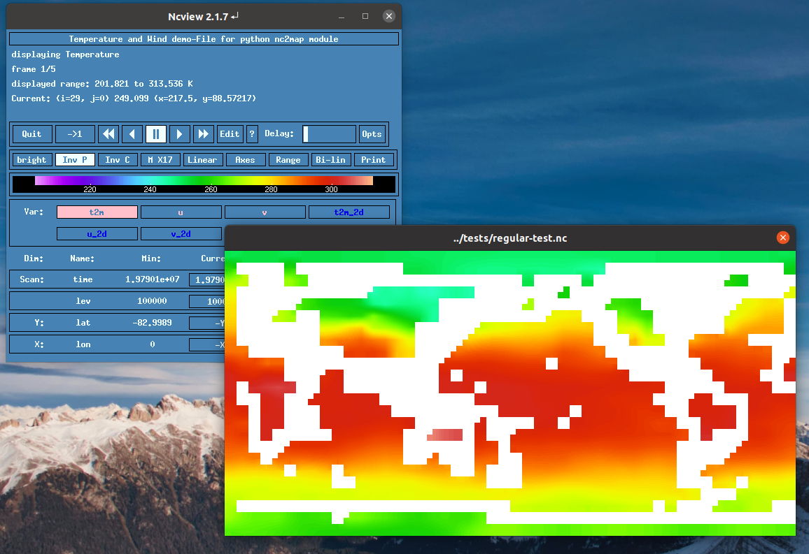

psy-view vs. ncview
When developping psy-view, we had the intuitiveness of ncview in mind, a light-weight graphical user interface to visualize the contents of netCDF files.
In general, psy-view can do everything that ncview does, and more.
The following table tries to summarize the differences of the features for both softwares. If you feel like anything is missing or wrong, please tell us by creating a new issue at https://github.com/psyplot/psy-view/issues/
Feature |
psy-view |
ncview |
|---|---|---|
supported grids |
rectilinear |
|
supported plots |
|
|
mouse features |
|
|
View the data |
not yet implemented |
comes with a simple and basic editor |
image export |
all common formats (e.g. PDF, PNG, GIF, etc.) with high resolution |
PS |
animation export |
GIF, MP4 (using ffmpeg or imagemagick) Note This is a beta feature |
not implemented |
GUI (Graphical User Interface) startup time |
fast locally, slow via X11 |
fast |
projection support |
|
|
supported files |
anything that is supported by xarray (netCDF, GRIB, GeoTIFF, etc.) |
netCDF files only |
Language |
Entirely written in Python with the use of |
Entirely written in C |
Extensibility |
psy-view is built upon psyplot, so you can
|
cannot be extended |